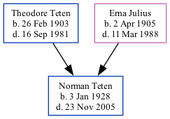

Norman Teten 1928 - 2005
[ Home ] | [ Surnames Index ] | [ Family History ]The child of Theodore Teten and Erna Julius, , Norman was the second cousin twice-removed on the father's side of Stephanie Hardesty (née Teten), was born in Nebraska on Jan 3, 19281,2,3,4,5.
During his life, he was living in Rock Creek, Otoe, Nebraska in 19301 and in 19352; in Rock Creek, Otoe, Nebraska, USA on Apr 1, 19402; and in Talmage, NE in 19934.
He died on Nov 23, 2005 in Talmage, Otoe, Nebraska3,5 and was buried in NE after Nov 23, 20055.
Parents
- Theodore Friedrich was born on Feb 26, 1903
- Erna was born on Apr 2, 1905
Citations
- 1930 United States Federal Census Ancestry.com Operations Inc (Age: 2; Age: 2 3/12; Marital Status: Single; Relation to Head of House: Son)
- 1940 United States Federal Census Ancestry.com Operations, Inc. (Age: 12; Marital Status: Single; Relation to Head of House: Son)
- Social Security Death Index Ancestry.com Operations Inc
- U.S. Public Records Index, Volume 1 Ancestry.com Operations, Inc.
- U.S. Veterans Gravesites, ca.1775-2006 Ancestry.com Operations Inc
Family Tree
Data (GEDCOM) maintained by Jay Weston Hannah, Omaha, Nebraska, USA.
Website generated by ged2site. Last updated on Jun 18, 2024.